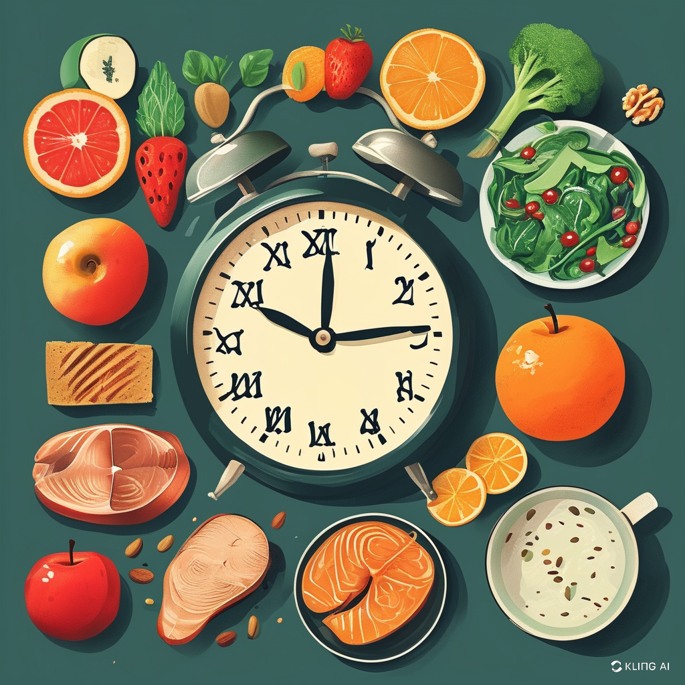
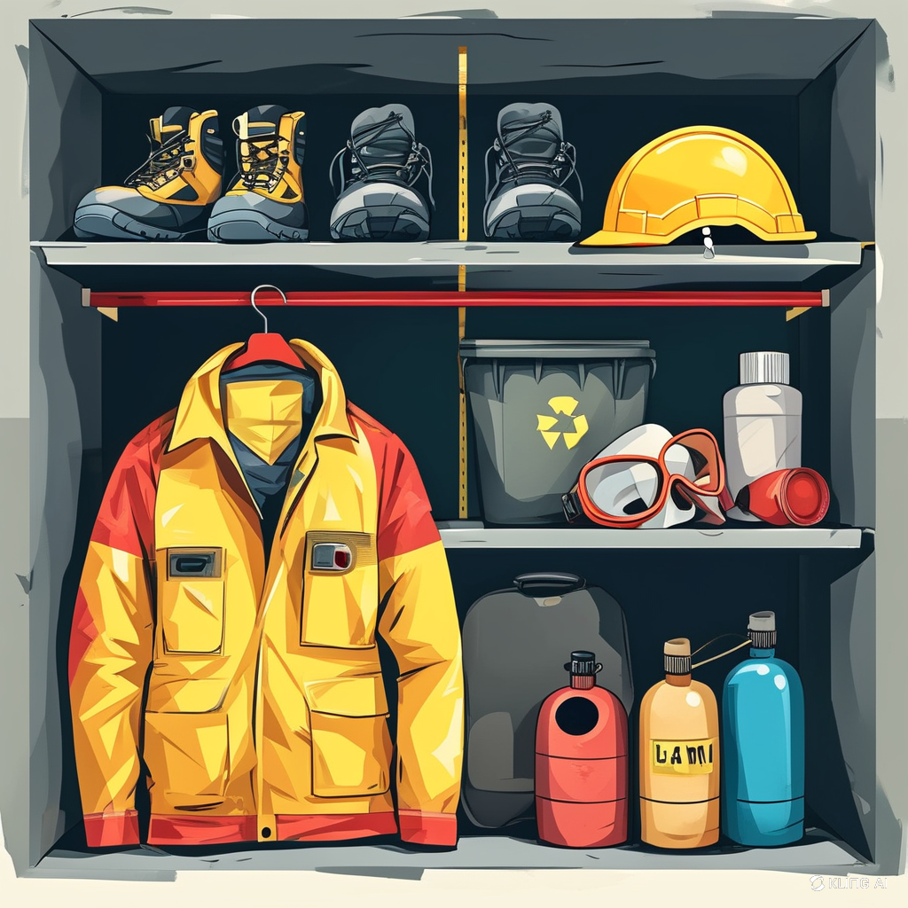

Perusahaan harus menyusun pertanyaan dan tes yang relevan dengan pekerjaan yang dilamar untuk mendapatkan pemahaman yang jelas mengenai kompetensi calon karyawan.
Medical Check Up:
Menjalin kerjasama dengan fasilitas kesehatan terpercaya untuk melakukan pemeriksaan kesehatan secara menyeluruh, termasuk tes darah, urine, dan pemeriksaan fisik.
Menyediakan informasi yang jelas tentang prosedur dan manfaat Medical Check Up kepada calon karyawan.
Pentingnya Medical Check Up:
Meningkatkan Kualitas Kerja
Menghindari Tuntutan Hukum
Hasil Medical Check Up:
Menyusun kebijakan yang jelas mengenai penanganan hasil Medical Check Up, termasuk tindakan untuk karyawan yang 'temporary unfit' atau 'unfit for job'.
Menyusun kebijakan yang jelas mengenai penanganan hasil Medical Check Up, termasuk tindakan untuk karyawan yang 'temporary unfit' atau 'unfit for job'.
- Kesehatan Kerja Selama Bekerja

Jam Kerja:
Menerapkan jadwal kerja yang fleksibel untuk mengurangi kelelahan, termasuk mengatur shift kerja dan waktu istirahat yang memadai.
Asupan Gizi Pekerja:
Menyediakan makanan sehat di kantin atau memberikan tunjangan untuk makanan sehat bagi pekerja.
Mengadakan seminar tentang gizi dan pentingnya pola makan sehat.
Pemeriksaan Rutin:
Menyusun jadwal pemeriksaan kesehatan berkala dan menjadwalkan pemeriksaan secara rutin di tempat kerja.
Program Kesehatan:
Mengembangkan program kesehatan seperti kelas kebugaran, yoga, atau kegiatan fisik lainnya untuk meningkatkan kesehatan fisik pekerja.
Dukungan Psikologis:
Menyediakan layanan konseling kesehatan mental dan pelatihan untuk manajer agar dapat mengenali dan membantu pekerja yang mengalami stres.
Lingkungan Kerja Positif:
Membangun budaya komunikasi terbuka di tempat kerja untuk mendukung pekerja berbicara tentang masalah kesehatan mereka.

Pelatihan K3:
Mengadakan pelatihan keselamatan kerja secara rutin dan mengedukasi pekerja tentang risiko di tempat kerja.
Penyediaan Alat Pelindung Diri (APD):
Menyediakan APD yang sesuai dan memastikan pekerja menggunakannya dengan benar.
- Pemeriksaan Kesehatan Setelah Kerja
Implementasi Pemeriksaan Kesehatan:
Menyusun program pemeriksaan kesehatan tahunan dan melibatkan dokter untuk memberikan hasil dan rekomendasi kesehatan.
Deteksi Dini Penyakit Akibat Kerja:
Mengintegrasikan hasil pemeriksaan kesehatan ke dalam sistem manajemen SDM untuk melakukan analisis lebih lanjut mengenai dampak kesehatan dari pekerjaan.
Rencana Pemeriksaan Terstruktur:
Membuat panduan dan protokol untuk setiap jenis pemeriksaan kesehatan yang dilakukan, termasuk jadwal dan metode pelaporan hasil.
Edukasi tentang Penyakit Akibat Kerja:
Memberikan informasi kepada pekerja tentang penyakit yang mungkin timbul akibat pekerjaan mereka dan cara pencegahannya.